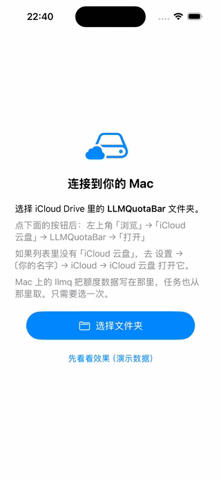
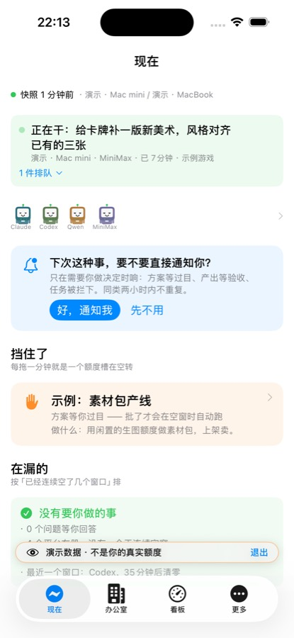
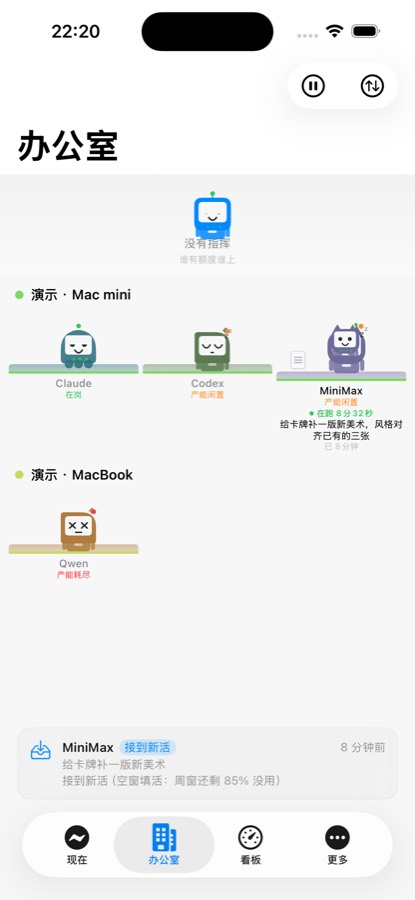
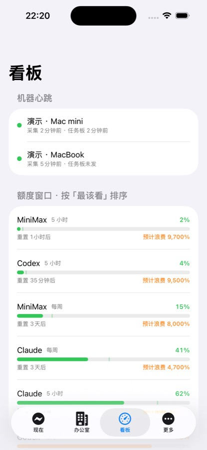
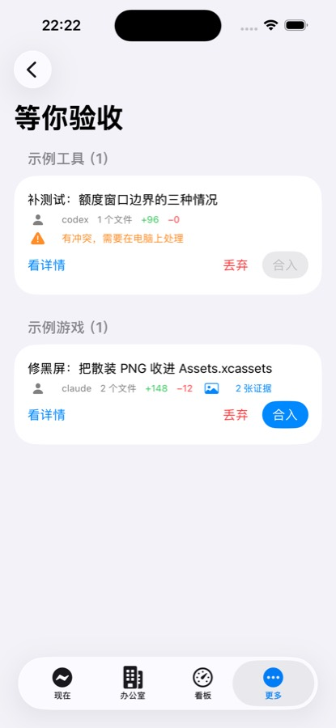

Claude、Codex、Qwen、Kimi…… 每家都按窗口发额度，窗口一过，没用的部分直接清零。 你不会收到任何提醒，也没有账单告诉你「这周有多少份额白扔了」。
「空窗」= 一整个额度窗口从头到尾一次都没用过。 Codex 的 154 个五小时窗里，有 127 个完全空着 —— 那份订阅有八成的钱在打水漂。
下面一层不需要上面一层。只用第一层是零门槛的。
扫本机各家 CLI 的用量，算出哪份订阅快到期还没用。不需要 API key，不联网 —— 读的是它们自己在本地留下的会话日志和额度回报。
swift build 完就能用几台电脑的用量合到一起看，手机 App 读同一份数据。走你自己的 iCloud，没有服务器。
需要 iCloud Drive窗口快过期还空着时，自动挑一个有余量的平台派活。跑完自己提交，附上实跑截图，等你在手机上验收。
需要先装好各家 CLI下面四张是 App 内置演示模式的真实画面。





需要 macOS 和 Xcode 命令行工具，没有别的前置。
# 装了哪个平台就采哪个，一个都没装也能跑 git clone https://github.com/scott987-cmd/quotient cd quotient && swift build -c release ./.build/release/llmq collect # 扫一遍本机 ./.build/release/llmq report # 看结果
想先试试又不想弄脏自己的配置：LLMQ_HOME=/tmp/试用 llmq collect，
整个数据目录挪到那儿，删掉就干净了。
这些约束不是省事，是设计选择。
唯一那个端口是给手机 App 用的（iOS 上没有 SSH 这条路）。
放宽的前提写在 SECURITY.md 里，违反了 swift test 和
llmq security 都会失败。